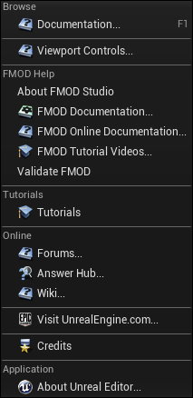

Unreal Integration 2.03
If you are experiencing an issue with the integration and none of the topics below help, visit to our Q&A Forum.
You should see a shortcut to the manual is available under the help menu, that means the plugin is in the right place and has been enabled.

If you see the FMOD Help in the manual, then the plugin installed correctly. If you don't see FMOD help, it isn't installed.
If you have modified the project output format in your FMOD Studio project, you will need to update your Unreal project settings to match.
This can be found under "Edit > Project Settings > FMOD Studio > Output Format". Keep in mind that this must match the Studio project settings in order for the mix to behave correctly.
The editor does not mark FMOD assets as read-only, so there is nothing stopping the user from trying to rearrange the folder structure.
However any such changes aren't going to change the underlying Studio project, so the changes will be lost next time Unreal is restarted.
The inbuilt Unreal asset serialization stores asset by full path, not by GUID. This means that if you rename events or folders in the Studio Tool, then any references in Unreal levels will be lost. For now the only workaround is to avoid renaming events or folders once you have started using them in levels.
See the Deployment page for information about issues with deployment.
If you Launch your game and there is no sound playing or there is error loading the FMODStudio module, it an issue with Deployment.
If Live Update is enabled and the FMOD Studio will error when it fails to open the required network port. If this is a problem, then Live Update can be disabled in the Project Settings window.
To help track down problems, verbose logging can be turned on for FMOD For Unreal. Add the following command line to the Unreal editor:
-LogCmds="LogFMOD verbose"
Packaging a blueprint only project containing FMOD for Unreal will result in an error:
"Plugin 'FMODStudio' failed to load because module 'FMODStudio' could not be found.
The only way to work around this is to add a C++ class to the project and build the resulting solution before packaging again.
Add an empty class from the File menu in 4.27 or Tools menu in 5+.
| 4.27 | 5+ |
|---|---|
Select any option.
| 4.27 | 5+ |
|---|---|
Wait for UE to finish setting up the .sln and Source files.
Attempt to repackage the project.
This is mentioned by Epic on their forum: Unable to run plugins when packaged.
FMOD will not automatically mute its audio output when your game loses focus due to the user hitting alt-tab or switching to a different app. If you would like to mute FMOD audio when your game loses focus, make an OnApplicationActivationStateChanged callback and write code to mute the FMOD master bus. Here is an example :
void AExampleGameMode::InitFMODFocusChangeCallback()
{
FSlateApplication::Get().OnApplicationActivationStateChanged()
.AddUObject(this, &AExampleGameMode::OnWindowFocusChanged);
}
void AExampleGameMode::OnWindowFocusChanged(bool bIsFocused)
{
#if !WITH_EDITOR
if (IFMODStudioModule::IsAvailable())
{
FMOD::Studio::System* StudioSystem = IFMODStudioModule::Get().GetStudioSystem(EFMODSystemContext::Runtime);
FMOD::Studio::Bus* masterBus;
StudioSystem->getBus("bus:/", &masterBus);
masterBus->setMute(!bIsFocused);
}
#endif
}
Normally cleaning up in EndPlay() is valid and safe to do for your game, but during Play-In-Editor EndPlay doesn't get triggered until after the FMODStudio Module has already been shutdown. This isn't such an issue with Studio API, as when the System gets released it cleans up all of it's managed handles. The issue is when using the Core API because you need to manage it's objects yourself.
We have a delegate that you can hook into, which will fire off a function before the FMOD System has been shutdown. You can access the delegate using IFMODStudioModule::Get().PreEndPIEEvent().
Eg.
void AMyActor::BeginPlay()
{
#if WITH_EDITOR
IFMODStudioModule::Get().PreEndPIEEvent().AddUObject(this, &AMyActor::ShutdownFunction);
#endif
}
void AMyActor::EndPlay()
{
#if WITH_EDITOR
IFMODStudioModule::Get().PreEndPIEEvent().RemoveAll(this);
#else
ShutdownFunction();
#endif
}
void AMyActor::ShutdownFunction()
{
if (channel)
{
channel->stop();
}
if (sound)
{
sound->release();
}
}
This usually happens because the strings bank file has not been loaded. The strings bank is denoted with the file type .strings.bank, and includes all the metadata required to look up events, buses, snapshots, and VCAs by their paths during runtime. In the event that a path lookup is performed while the strings bank isn't loaded, the error FMOD_ERR_EVENT_NOTFOUND will occur, which will either be logged to the Unreal Console, or directly returned from the Studio API function being called.